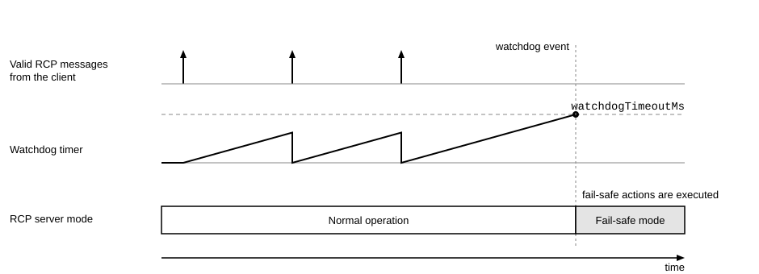
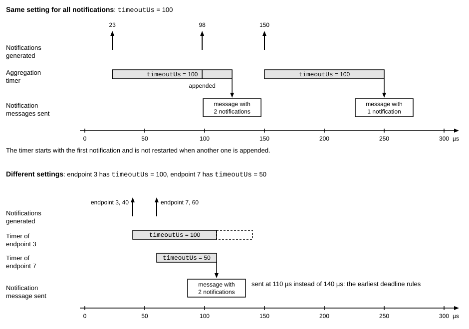

Core Operations
File: server/rcp_core.proto
Package: esb.rcp.core
Core operations of the RCP server.
This file defines the core functions of the RCP server: its identification number, the network watchdog with the
fail-safe mode, the aggregation of notifications, the scheduler, and the non-volatile memory (NVM). They are
configured with fldServerConfig (see rcp.dev.fldConfig) and reported by status queries. The page Higher-level behavior
describes the fail-safe mode and the NVM, and the page Scheduler the scheduler.
Server identification
The identification number (DID) of an RCP server and the DID mask of an operation (fldOperation.deviceIdMask)
select the servers that execute an operation of a directive that is broadcast or multicast, see Messages. A
server executes the operation only if the bitwise AND of its DID and the mask is not zero. All other servers ignore
the operation. A server with the DID 0 therefore ignores every operation that has a mask. Each set bit of a DID
makes the server a member of the group that the same bit of a mask selects. For example, three servers with the
DIDs 0b001, 0b010, and 0b100 are each selected by a mask with their own bit, and the mask 0b101 selects the first
and the third server. A server with the DID 0b011 executes every operation whose mask has the bit 0 or the bit 1
set.
Network watchdog
The network watchdog detects the loss of the client. It is disabled by default, and a non-zero
fldServerConfig.watchdogTimeoutMs enables it. While the watchdog is enabled, every valid RCP message restarts the
watchdog timer. A client that wants to keep the server out of the fail-safe mode sends a valid RCP message at least
once within the timeout. The command rcp.dev.opNone only restarts the timer, so a client can use it as a keep-alive
message when it has nothing else to send. The figure shows the timer:

In the figure, each valid RCP message from the client starts the timer again. After the third message, no valid
message arrives within the timeout. The timer reaches fldServerConfig.watchdogTimeoutMs and the watchdog event
occurs. The server changes from normal operation to the fail-safe mode and executes the fail-safe actions, see the
page Higher-level behavior.
Aggregation of notifications
To save bandwidth, the RCP server collects the notifications of the endpoints in unsolicited notification messages
(see fldNotif). Per endpoint, a timeout limits how long the server may wait after the first notification
before it sends the message. The timer is not restarted when another notification is appended, and of several
endpoints with different timeouts, the earliest deadline applies. A message is also sent when it reaches a
configurable number of notifications or bytes. The figure shows an example for one endpoint and an example for two
endpoints with different timeouts:

In the first example, the timeout is 100 µs and notifications are generated at 23 µs, 98 µs, and 150 µs. The first notification starts the timer, the second one is appended to the same message, and at 123 µs the server sends the message with two notifications. The third notification starts a new message, which the server sends at 250 µs with one notification.
In the second example, endpoint 3 has a timeout of 100 µs and endpoint 7 one of 50 µs. Endpoint 3 generates a notification at 40 µs and endpoint 7 at 60 µs. The deadline of endpoint 3 would be 140 µs, but that of endpoint 7 is 110 µs, so the server sends one message with both notifications at 110 µs.